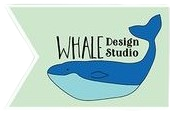

Logo Project: Whale Design Studio

This webpage was created to showcase the logo I created for Whale Design Studios.
It includes, but is not limited to, the process of creating the logo, rationale for color choices,
appeal to target audience, and design skills.
Here are some of my thoughts about creating this logo design:
- ➤ I created this logo in Adobe Illustrator. I used the rectangle shape tool.I created this logo in Adobe Illustrator. I used the rectangle shape tool.I created this logo in Adobe Illustrator. I used the rectangle shape tool.
- ➤ I chose analogous colors such as blue, teal, and green to complement the whale icon.I chose analogous colors such as blue, teal, and green to complement the whale icon.I chose analogous colors such as blue, teal, and green to complement the whale icon.
- ➤ I designed the logo with symmetry while keeping the visual contrast intact.I designed the logo with symmetry while keeping the visual contrast intact. I designed the logo with symmetry while keeping the visual contrast intact.
- ➤ This project helped me enhance my typography and design theory skills.This project helped me enhance my typography and design theory skills.This project helped me enhance my typography and design theory skills.